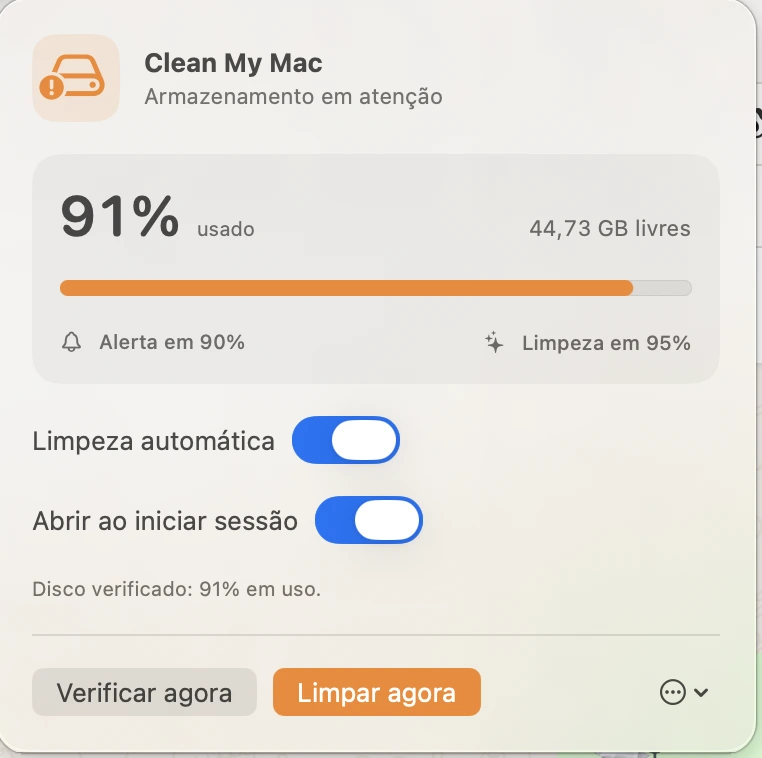

Mais tarefas, mais cópias
Sessões paralelas multiplicam branches, worktrees e ambientes temporários sem avisar quanto espaço consumiram.
CODEXCLAUDE CODEWORKTREES
Feito para Codex, Claude Code e agentes de programação
Worktrees, builds, node_modules e caches crescem a cada tarefa. O Clean My Mac vigia o disco e recupera esse espaço sozinho — ou com um clique.
Instale uma vez · monitora a cada 30 segundos · sem conta · sem telemetria

O custo invisível do código com IA
Foi esse problema real que criou o Clean My Mac: Codex e Claude Code aceleram o trabalho, mas cada execução pode deixar worktrees, dependências, builds e caches ocupando dezenas de gigabytes.
Sessões paralelas multiplicam branches, worktrees e ambientes temporários sem avisar quanto espaço consumiram.
node_modules, .next e caches de npm, uv, Bun, Deno e Homebrew continuam no SSD depois da entrega.
O sistema verifica Git, processos ativos e uma lista segura antes de remover somente o que pode ser reconstruído.
Categoria diferente: CCleaner e utilitários genéricos fazem manutenção ampla. O Clean My Mac foi desenhado para o rastro técnico de agentes de código e protege fontes, projetos ativos e arquivos pessoais.
Veja o modo autônomo decidir
Leve a barra até 78% para simular a limpeza. Esta demonstração reproduz a política do aplicativo sem alterar o seu Mac.
O SSD está abaixo do limite de alerta. Nenhuma ação é necessária.
Entende projetos, não só pastas
node_modules e .next ignorados pelo Git e acima de 100 MBCada limpeza gera um registro local. Artefatos são apagados somente depois das verificações de segurança. Inspecionar o código exato →
Instale uma vez
O ícone fica na barra do macOS e abre automaticamente com a sessão.
Codex, Claude Code e seus builds continuam trabalhando enquanto o disco é monitorado.
Aos 78%, a lista segura entra em ação. Aos 80%, o aplicativo tenta novamente a cada 15 segundos.
Aplicativo real
Grátis e código aberto
Um clique ativa a proteção autônoma. O limite de 80% é tratado dentro do que for seguro; se não houver resíduos suficientes, o aplicativo alerta sem apagar arquivos pessoais.
Instruções de instalação →Preencha os dados para liberar o download gratuito. A CF Gauss registra o contato no pipeline comercial e poderá falar com você sobre o Clean My Mac.
Seu contato foi registrado. O arquivo ZIP contém o aplicativo para macOS.
Baixar Clean My MacGrátis · v1.1.3